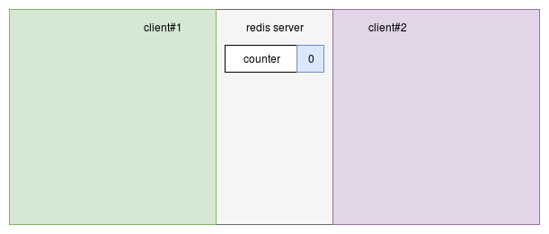
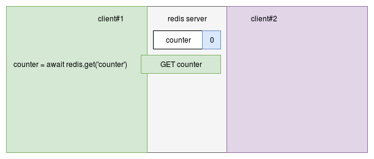
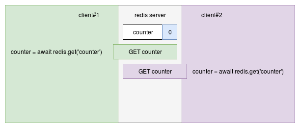
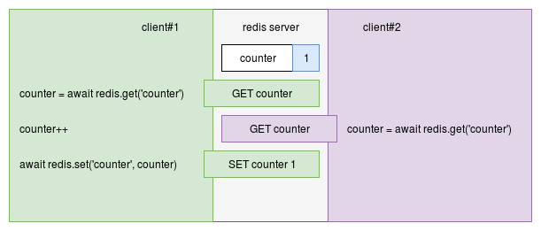
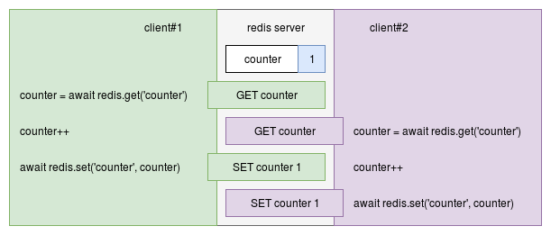
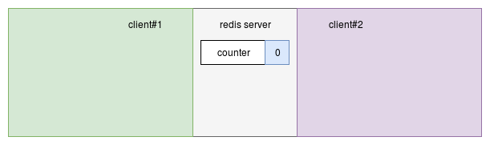
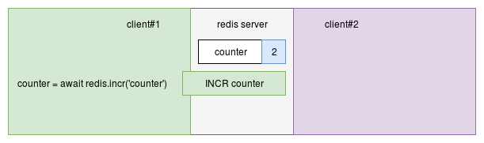
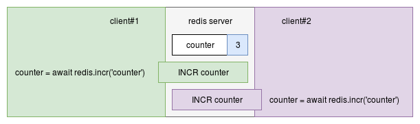

Atomicity in Redis
(with examples in Node.js)
Thomas Hunter II
Background
- Redis is Mostly Single-Threaded
- Except for things like Background IO
- Node.js is Mostly Single-Threaded
- Except for IO and Node v10 Worker Threads
- Atomicity:
- Complex operations happen uninterupted
- This becomes a problem with multiple clients
Every Single Command is Atomic
GET foo
SET foo 1
DEL foo
FLUSHALL
Multiple Commands aren't Atomic

- Scenario: Two clients want to increment
counter
Multiple Commands aren't Atomic

- Client #1 reads value of
counter
Multiple Commands aren't Atomic

- Client #2 reads value of
counter
Multiple Commands aren't Atomic

- Client #1 sets value of
counter to 1
Multiple Commands aren't Atomic

- Client #2 sets value of
counter to 1
Some use-cases have Atomic variants
INCR foo # GET ; foo++ ; SET
SETNX bar # EXISTS bar ; SET bar
RPOPLPUSH src dest # RPOP ; LPUSH
GETSET key value # GET ; SET
INCR is an Atomic Increment

- Scenario: Two clients want to increment
counter
INCR is an Atomic Increment

- Client #1 atomically increments value of
counter
INCR is an Atomic Increment

- Client #2 atomically increments value of
counter
Pipelining
- Ensures commands are run in order per-connection
- Sends a batch of commands
- Commands are sent in the same message
- The
redis module usually does this anyway
Pipelining: Example Code
redis.batch()
.zrangebyscore('jobs', 0, now) // get jobs
.zremrangebyscore('jobs', 0, now) // delete jobs
.exec((error, data) => {
let jobList = data[0];
console.log('jobs', jobList); // perform work
});
ZRANGEBYSCORE jobs 0 1553098369661
ZREMRANGEBYSCORE jobs 0 1553098369661
Pipelining: Not True Atomicity
- Other connections can still interleave commands
- A subset of commands can fail
Pipelining: What's it for?
- Reducing network latency
- Send several commands in one message
- Receive several responses in one message
Multi: True Atomicity
- Atomic across many clients / connections
- Client first sends a
MULTI command
- Then, sends intermediary commands
- Intermediary commands don't run yet
- Other clients can run commands
- Client sends an
EXEC command
- At this point the commands run
Multi: Transactional Atomicity
MULTI begins a transaction- Commands executed within are all-or-nothing
- Errors or disconnects won't lead to inconsistencies
Multi: Example Code
redis.multi()
.zrangebyscore('jobs', 0, now) // get jobs
.zremrangebyscore('jobs', 0, now) // delete jobs
.exec((error, data) => {
let jobList = data[0];
console.log('jobs', jobList); // perform work
});
MULTI
ZRANGEBYSCORE jobs 0 1553099335332
ZREMRANGEBYSCORE jobs 0 1553099335332
EXEC
Multi: No arg/return chaining
- Can't use return values as arguments
- I.e., cannot pop from list, assign to new key
Lua: The Ultimate in Atomicity
- Scripts need to be
LOADed ahead of time
- Referenced by SHA1 sum
- Declare key names as arguments for sharding
Lua: Command Chaining
- Output of one command can be piped into another
- Other processing can happen, too
- Similar to an RDBMS Stored Procedure
Lua: Example Code
-- get-cities.lua: Find cities within 10km of query
local key_geo = KEYS[1]
local key_hash = KEYS[2]
local lon = ARGV[1]
local lat = ARGV[2]
local city_ids = redis.call('GEORADIUS',
key_geo, lon, lat, 10, 'km')
return redis.call('HMGET', key_hash, unpack(city_ids))
Lua: Drawbacks
- Another language to maintain (simple grammar)
- Increases overhead on Redis server
- An infinite loop would lock up server
- Need to load scripts before using
- It's idempotent; load scripts when app starts
Intrinsic: Node.js Security Policies
const REDIS = 'redis://redishost:6379/1';
routes.allRoutes(policy => {
policy.redis.allowConnect(REDIS);
});
routes.get('/users/*', policy => {
policy.redis.allowCommandKey(REDIS, 'GET', 'user-*');
});
routes.post('/server/stats', policy => {
policy.redis.allowInfoSection(REDIS, 'memory');
});